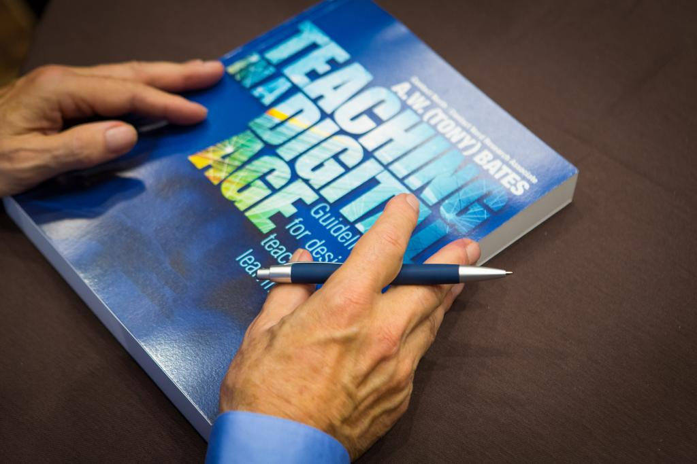
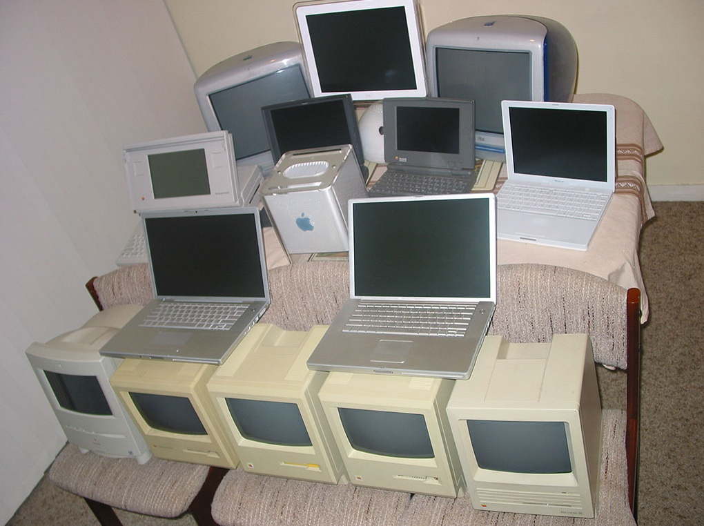
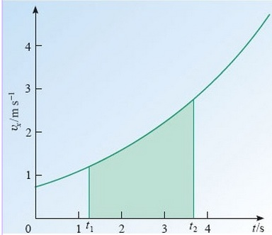

7.3 Mídia ou tecnologia?


7.3.1 Definindo mídia e tecnologia
Filósofos e cientistas debatem sobre a natureza das mídias e das tecnologias há um longo período. A distinção revela-se desafiadora porque, na linguagem cotidiana, tendemos a utilizar estes dois termos de forma intercambiável. Por exemplo, a televisão é frequentemente referida tanto como uma mídia quanto como uma tecnologia. A internet constitui uma mídia ou uma tecnologia? E isso faz diferença?
Argumentarei que existem diferenças, e que importa distinguir entre mídia e tecnologia, especialmente se procuramos orientações sobre quando e como utilizá-las. Existe o perigo, particularmente na educação, de focar demasiadamente na tecnologia pura e não dar atenção suficiente aos contextos pessoais, sociais e culturais nos quais a utilizamos. Os termos "mídia" e "tecnologia" representam formas totalmente distintas de pensar sobre a escolha e a utilização da tecnologia no ensino e na aprendizagem.
7.3.2 Tecnologia
Existem muitas definições de tecnologia (ver a Wikipedia para um bom debate sobre o assunto). Essencialmente, as definições de tecnologia variam desde a noção básica de ferramentas até sistemas que empregam ou exploram tecnologias. Assim:
- "tecnologia refere-se a ferramentas e máquinas que podem ser utilizadas para resolver problemas do mundo real" constitui uma definição simples;
- "o estado atual do conhecimento da humanidade sobre como combinar recursos para produzir os produtos desejados, resolver problemas, satisfazer necessidades ou preencher desejos" constitui uma definição mais complexa e grandiosa (e apresenta uma presunção que considero imerecida — a tecnologia faz frequentemente o oposto de satisfazer desejos, por exemplo).
Em termos de tecnologia educacional, temos de considerar uma definição ampla de tecnologia. A tecnologia da internet envolve mais do que apenas uma coleção de ferramentas: trata-se de um sistema que combina computadores, telecomunicações, software e regras e procedimentos ou protocolos. Contudo, hesito perante a definição muito ampla de "estado atual do conhecimento da humanidade". A partir do momento em que uma definição começa a abranger muitos aspectos diferentes da vida, torna-se complexa e ambígua.
Tendo a pensar na tecnologia na educação como coisas ou ferramentas utilizadas para apoiar o ensino e a aprendizagem. Assim, os computadores, os programas de software (como um sistema de gestão de aprendizagem) ou uma rede de transmissão ou de comunicações constituem tecnologias. Um livro impresso constitui uma tecnologia. A tecnologia inclui frequentemente uma combinação de ferramentas com ligações técnicas específicas que lhes permitem funcionar como um sistema tecnológico, como a rede telefônica ou a internet.
No entanto, para mim, as tecnologias ou mesmo os sistemas tecnológicos não comunicam nem criam significado por si só. Limitam-se a estar ali até receberem ordens para fazer algo, ou até serem ativados, ou até uma pessoa começar a interagir com a tecnologia. Nesse momento, começamos a entrar no domínio das mídias.


Image: © Alex Dawson, Flickr, 2006

7.3.3 Mídia
Mídia (plural de meio) constitui outra palavra que conta com muitas definições.
A palavra "meio" provém do latim, significando no meio (uma mediana) e também aquilo que intermedia ou interpreta. As mídias exigem um ato ativo de criação de conteúdo e/ou de comunicação, e alguém que receba e compreenda a comunicação, bem como as tecnologias que suportam a mídia.
O termo "mídias" apresenta dois significados distintos e relevantes para o ensino e a aprendizagem, ambos diferentes das definições de tecnologia:
7.3.3.1 Mídias associadas aos sentidos e ao "significado"
Utilizamos os nossos sentidos, tais como a audição e a visão, para interpretar as mídias. Neste sentido, podemos considerar o texto, os recursos gráficos, o áudio e o vídeo como "canais" de mídias, na medida em que intermedeiam ideias e imagens que transmitem significado. Cada interação que temos com as mídias, neste sentido, constitui uma interpretação da realidade e, mais uma vez, envolve habitualmente alguma forma de intervenção humana, como a escrita (para o texto), o desenho ou o design (para os recursos gráficos), a fala, o roteiro ou a gravação (para o áudio e o vídeo). Note-se que existem dois tipos de intervenção nas mídias: por parte do "criador", que constrói a informação, e por parte do "receptor", que também a deve interpretar.
As mídias dependem, naturalmente, da tecnologia, mas a tecnologia constitui apenas um elemento das mídias. Assim, podemos pensar na internet simplesmente como um sistema tecnológico, ou como uma mídia que contém formatos e sistemas de símbolos únicos que ajudam a transmitir significados e conhecimentos. Estes formatos, sistemas de símbolos e características únicas de uma determinada mídia (por exemplo, o limite de 280 caracteres no Twitter) são criados deliberadamente e necessitam de ser interpretados tanto pelos criadores como pelos usuários finais. Além disso, pelo menos na internet, as pessoas podem ser simultaneamente criadoras e intérpretes do conhecimento.
A computação também pode ser considerada uma mídia neste contexto. Utilizo o termo computação, e não computadores, uma vez que, embora a computação utilize computadores, ela envolve algum tipo de intervenção, construção e interpretação. A computação como mídia incluiria a programação, animações, redes sociais on-line, a utilização de um motor de busca ou a concepção e utilização de simulações. Assim, a Google utiliza um motor de busca como tecnologia principal, mas classifico a Google como uma mídia, dado que necessita de conteúdos e de provedores de conteúdos, bem como de um usuário final que defina os parâmetros da pesquisa, além da tecnologia dos algoritmos informáticos para auxiliar a busca. Assim, a criação, a comunicação e a interpretação de significados constituem características adicionais que transformam uma tecnologia numa mídia.
Em termos de representação do conhecimento, revela-se útil pensar nas seguintes mídias para fins educacionais, no âmbito das quais existem subtemas (apresentam-se apenas alguns exemplos):
- Texto: livros didáticos, romances, poemas;
- Recursos gráficos: diagramas, fotografias, desenhos, cartazes, grafites;
- Áudio: sons, fala, podcasts, programas de rádio;
- Vídeo e filme: programas de televisão, filmes, clipes do YouTube, depoimentos em vídeo ("talking heads");
- Computação: animações, simulações, fóruns de discussão on-line, mundos virtuais.
Além disso, nestes subsistemas existem formas de influenciar a comunicação através da utilização de sistemas de símbolos únicos, tais como o enredo e a utilização de personagens em romances, a composição na fotografia, a modulação da voz para criar efeitos no áudio, o corte e a montagem no cinema e na televisão, e o design de interfaces de usuário ou páginas web na computação. O estudo da relação entre estes diferentes sistemas de símbolos e a interpretação do significado constitui um campo de estudo próprio, designado de semiótica.
Na educação, poderíamos pensar no ensino presencial em sala de aula como uma mídia. Utilizam-se tecnologias ou ferramentas (por exemplo, giz e quadros-negros, ou PowerPoint e um projetor), mas o componente fundamental reside na intervenção do professor e na interação com os aprendizes em tempo real e em um tempo e espaço fixos. Podemos também pensar no ensino on-line como uma mídia diferente, com computadores, a internet (no sentido da rede de comunicação) e um sistema de gestão de aprendizagem como tecnologias centrais, mas é a interação entre professores, aprendizes e recursos on-line no contexto único da internet que constitui o componente essencial da aprendizagem on-line.
Sob uma perspectiva educacional, é importante compreender que as mídias não são neutras ou "objetivas" na forma como transmitem o conhecimento. Podem ser planejadas ou utilizadas de modo a influenciar (para o bem ou para o mal) a interpretação do significado e, por conseguinte, a nossa compreensão. Assim, algum conhecimento sobre o funcionamento das mídias revela-se essencial para ensinar na era digital. Em particular, necessitamos de saber qual a melhor forma de planejar e aplicar as mídias (e não a tecnologia) para facilitar a aprendizagem.
Ao longo do tempo, as mídias tornaram-se mais complexas, com mídias mais recentes (por exemplo, a televisão) incorporando alguns dos componentes de mídias anteriores (por exemplo, o áudio), bem como adicionando outra mídia (o vídeo). As mídias digitais e a internet estão incorporando e integrando cada vez mais todas as mídias anteriores, como o texto, o áudio e o vídeo, e acrescentando novos componentes de mídias, como a animação, a simulação e a interatividade. Quando as mídias digitais incorporam muitos destes componentes, transformam-se em "mídias ricas". Assim, uma grande vantagem da internet consiste no fato de abranger todas as mídias de representação: texto, recursos gráficos, áudio, vídeo e computação.
7.3.3.2 As mídias como organizações
O segundo significado de mídias é mais amplo e refere-se às indústrias ou áreas significativas da atividade humana organizadas em torno de tecnologias específicas, por exemplo, o cinema, a televisão, a edição de livros e a internet. No âmbito destas diferentes mídias, existem formas particulares de representar, organizar e comunicar o conhecimento.
Assim, por exemplo, na televisão existem diferentes formatos, tais como notícias, documentários, concursos, programas de ação, ao passo que no setor editorial existem romances, jornais, quadrinhos, biografias, e assim por diante. Por vezes, os formatos sobrepõem-se, mas, mesmo assim, existem sistemas de símbolos em uma mídia que a distinguem de outras. Por exemplo, nos filmes existem cortes, fades, close-ups e outras técnicas que diferem marcadamente das utilizadas noutras mídias. Todas estas características das mídias trazem consigo as suas próprias convenções e auxiliam ou alteram a forma como o significado é extraído ou interpretado.
Por fim, existe um forte contexto cultural nas organizações de mídias. Por exemplo, Schramm (1972) constatou que as emissoras de radiodifusão dispõem frequentemente de um conjunto de critérios profissionais e formas de avaliar a "qualidade" de uma transmissão educativa diferentes dos critérios dos educadores (o que tornou o meu trabalho de avaliação dos programas que a BBC produzia para a Open University muito interessante). Hoje em dia, esta divisão profissional pode ser observada nas diferenças entre os cientistas da computação e os educadores em termos de valores e crenças no que se refere à utilização da tecnologia no ensino. Na sua forma mais simples, resume-se a questões de controle: quem é responsável pela utilização da tecnologia no ensino? Quem toma as decisões sobre o planejamento de um MOOC ou a utilização de uma animação?
7.3.4 As affordances das mídias


Imagem: © Open University, 2013

Diferentes mídias apresentam efeitos educativos ou affordances distintos. Se você simplesmente transferir o mesmo ensino para uma mídia diferente, não conseguirá explorar as características únicas dessa mídia. De forma mais positiva, é possível realizar um ensino diferente e, frequentemente, melhor, adaptando-o à mídia. Dessa forma, os estudantes aprenderão de maneira mais profunda e eficaz. Para ilustrar isto, vejamos um exemplo do início da minha carreira como pesquisador em mídias educacionais.
7.3.4.1 Uma história pessoal
Em 1969, fui nomeado pesquisador na Open University, no Reino Unido. Nesse momento, a universidade tinha acabado de receber a sua carta régia. Fui o 20º funcionário contratado. O meu trabalho consistia em investigar os programas-piloto oferecidos pelo National Extension College, que disponibilizava programas de educação a distância não formais de baixo custo em parceria com a BBC. O NEC estava modelando o tipo de disciplinas multimídia integradas, compostas por uma mistura de material impresso e transmissões de rádio e TV, que a Open University iria oferecer quando iniciasse as suas atividades.
Eu e o meu colega enviávamos semanalmente questionários por correio aos estudantes que frequentavam as disciplinas do NEC. O questionário continha tanto respostas fechadas como a oportunidade de comentários abertos, e perguntava aos estudantes sobre as suas reações às componentes impressas e de transmissão das disciplinas. Procurávamos identificar o que funcionava e o que não funcionava no planejamento de cursos multimídia de educação a distância.
Quando comecei a analisar os questionários, fiquei impressionado sobretudo com os comentários abertos em resposta às transmissões de televisão e de rádio. As reações aos componentes impressos tendiam a ser "frias": racionais, calmas, críticas, construtivas. As reações às transmissões revelavam-se opostas: "quentes", emocionais, fortemente favoráveis ou fortemente críticas ou mesmo hostis, e raramente construtivas. Algo estava acontecendo ali.
7.3.4.2 Resultados da pesquisa: de que forma as mídias diferem
A descoberta inicial de que as diferentes mídias afetavam os estudantes de forma distinta surgiu muito rapidamente, mas demorou mais tempo a descobrir de que forma as mídias se diferenciavam, e ainda mais tempo a compreender o porquê. Eis algumas das descobertas efetuadas por mim e pelos meus colegas no Grupo de Pesquisa em Mídias Audiovisuais da OU (Bates, 1984):
- os produtores da BBC (todos os quais possuíam formação acadêmica na área temática em que produziam os programas) pensavam o conhecimento de forma diferente dos acadêmicos com quem trabalhavam. Em particular, tendiam a pensar de forma mais visual e mais concreta sobre a matéria. Assim, tendiam a produzir programas que mostravam exemplos concretos de conceitos ou princípios presentes nos textos, aplicações de princípios ou o funcionamento de conceitos acadêmicos na vida real. A aprendizagem acadêmica assenta na abstração e em níveis superiores de reflexão. Contudo, os conceitos abstratos são melhor compreendidos se puderem ser relacionados com experiências concretas ou empíricas das quais, de fato, os conceitos abstratos são frequentemente extraídos. Os programas de televisão permitiam aos aprendizes transitar continuamente entre o abstrato e o concreto. Sempre que este processo era bem planejado, ajudava verdadeiramente um grande número de estudantes — mas não todos;
- os estudantes reagiam de forma muito diferente aos programas de TV. Alguns adoravam-nos, outros odiavam-nos e poucos se revelavam indiferentes. Os que os odiavam pretendiam que os programas fossem didáticos e repetissem ou reforçassem o que constava nos textos impressos. Curiosamente, porém, os que rejeitavam a TV tendiam a obter notas mais baixas ou mesmo a ser reprovados no exame final da disciplina. Os que adoravam os programas de TV tendiam a obter notas mais elevadas. Conseguiram perceber de que forma os programas ilustravam os princípios presentes nos textos, e os programas desafiavam estes estudantes a refletirem de forma mais ampla ou crítica sobre os temas da disciplina. A exceção verificou-se na matemática, onde os estudantes com desempenho limítrofe consideraram os programas de TV muito úteis;
- os produtores da BBC raramente utilizavam depoimentos estáticos (talking heads) ou aulas expositivas na TV. Com o rádio e, mais tarde, com as fitas de áudio, alguns produtores e acadêmicos integraram o áudio com os textos, por exemplo na matemática, utilizando um programa de rádio e, posteriormente, fitas de áudio para orientar os estudantes através de equações ou fórmulas no texto impresso (semelhante às aulas da Khan Academy hoje em vídeo);
- utilizar a televisão e o rádio para desenvolver uma aprendizagem de nível superior constitui uma competência que pode ser ensinada. Na disciplina introdutória (do primeiro ano) de ciências sociais (D100), muitos dos programas foram produzidos no formato de documentário típico da BBC. Embora os programas fossem acompanhados por notas de transmissão extensas que procuravam associar as transmissões aos textos acadêmicos, muitos estudantes sentiram dificuldades com estes programas. Quando a disciplina foi reformulada, cinco anos mais tarde, recorreu-se a um acadêmico de renome (Stuart Hall) como apresentador de todos os programas. Os primeiros programas assemelhavam-se a aulas expositivas, mas, em cada programa, Stuart Hall introduzia cada vez mais clipes visuais e ajudava os estudantes a analisar cada clipe. No final da disciplina, os programas baseavam-se quase inteiramente no formato de documentário. Os estudantes classificaram os novos programas de forma muito mais positiva e utilizaram muito mais exemplos dos programas de TV nos seus trabalhos e exames na disciplina reformulada.
7.3.4.3 Por que razão estes resultados são significativos?
Na altura (e durante muitos anos depois), pesquisadores como Richard Clark (1983) argumentavam que a investigação científica demonstrara a inexistência de diferenças significativas na utilização de diferentes mídias. Em particular, não existiam diferenças entre o ensino presencial em sala de aula e outras mídias, como a televisão, o rádio ou o satélite. Ainda hoje, registram-se conclusões semelhantes relativamente à aprendizagem on-line (por exemplo, Means et al., 2010).
No entanto, isto deve-se ao fato de a metodologia de pesquisa utilizada pelos investigadores para estes estudos comparativos exigir que as duas condições comparadas sejam idênticas, à exceção da mídia utilizada (as chamadas comparações emparelhadas ou, por vezes, estudos quase-experimentais). Tipicamente, para que a comparação fosse cientificamente rigorosa, se você ministrasse aulas expositivas presenciais, teria de comparar com aulas expositivas na televisão. Se utilizasse outro formato de televisão, como um documentário, não estaria comparando elementos idênticos. Uma vez que a sala de aula era utilizada como base de comparação, era necessário retirar todas as affordances da televisão — o que esta conseguia realizar melhor do que uma aula expositiva — para poder efetuar a comparação. De fato, Clark argumentou que, quando se encontravam diferenças na aprendizagem entre as duas condições, estas decorriam da utilização de uma pedagogia diferente na mídia externa à sala de aula.
O ponto crítico reside em saber que diferentes mídias podem ser utilizadas para ajudar os aprendizes a estudar de formas distintas e a alcançar resultados diversos. Em certo sentido, investigadores como Clark tinham razão: os métodos de ensino são importantes, mas algumas mídias conseguem apoiar formas diferentes de aprendizagem mais facilmente do que outras. No nosso exemplo, um programa de TV em formato de documentário visa desenvolver as competências de análise e a aplicação ou o reconhecimento de construções teóricas, ao passo que uma aula expositiva presencial se foca mais em fazer com que os estudantes compreendam e recordem corretamente as construções teóricas. Assim, exigir que o programa de televisão seja avaliado pelos mesmos métodos de avaliação da aula expositiva presencial mede incorretamente o valor potencial do programa de TV. Neste exemplo, poderá ser preferível utilizar ambos os métodos: o ensino didático para ensinar a compreensão e, em seguida, uma abordagem documental para aplicar essa compreensão. (Note-se que um programa de televisão poderia fazer ambas as coisas, mas a aula expositiva presencial não).
Talvez ainda mais importante seja a ideia de que várias mídias funcionam melhor do que apenas uma. Isto permite acolher aprendizes com preferências de estudo diferentes e permite ensinar a matéria de formas distintas através de mídias diversas, conduzindo assim a uma compreensão mais profunda ou a uma gama mais ampla de competências na utilização dos conteúdos. Por outro lado, isto aumenta os custos.
7.3.5 De que forma estes resultados se aplicam à aprendizagem digital?
A aprendizagem digital pode incorporar uma gama de diferentes mídias: texto, recursos gráficos, áudio, vídeo, animações, simulações. Necessitamos de compreender melhor as affordances de cada mídia no âmbito da internet, e utilizá-las de forma diferente mas integrada, a fim de desenvolver conhecimentos mais profundos e uma gama mais ampla de resultados e competências de aprendizagem. A utilização de diferentes mídias permite também uma maior individualização e personalização da aprendizagem, adaptando-se melhor aos diferentes estilos e necessidades de estudo dos alunos. Acima de tudo, devemos deixar de tentar simplesmente transferir o ensino presencial em sala de aula para outras mídias, como os MOOCs, e começar a conceber a aprendizagem digital de modo a explorar todo o seu potencial.
7.3.6 Implicações para a educação
Se estamos interessados em selecionar tecnologias adequadas para o ensino e a aprendizagem, não devemos olhar apenas para as características técnicas de uma tecnologia, nem para o sistema tecnológico mais amplo em que se insere, nem para as crenças educativas que trazemos como professores de sala de aula. Precisamos também de examinar as características únicas de diferentes mídias, em termos dos seus formatos, sistemas de símbolos e valores culturais. Estas características únicas são cada vez mais designadas como affordances das mídias ou da tecnologia.
O conceito de mídia é muito mais "suave" e "rico" do que o de "tecnologia", mais aberto à interpretação e mais difícil de definir, mas "mídia" constitui um conceito útil, na medida em que pode também incorporar a inclusão da comunicação presencial como uma mídia. Outra razão para distinguir entre mídia e tecnologia reside em reconhecer que a tecnologia, por si só, não conduz à transferência de significado.
À medida que novas tecnologias são desenvolvidas e integradas em sistemas de mídias, os formatos e as abordagens antigas são transferidos das mídias anteriores para as mais recentes. A educação não constitui exceção. A nova tecnologia é "acomodada" a formatos antigos, como no caso dos clickers e da captura de aulas expositivas, ou tentamos recriar a sala de aula num espaço virtual, como nos sistemas de gestão de aprendizagem. No entanto, estão sendo gradualmente descobertos novos formatos, sistemas de símbolos e estruturas organizacionais que exploram as características únicas da internet como mídia. Por vezes, revela-se difícil ver claramente estas características únicas neste momento histórico. Contudo, os e-portfólios, a aprendizagem móvel, os recursos educacionais abertos, como as animações ou as simulações, e a aprendizagem autogerida em grandes grupos sociais on-line constituem exemplos de formas pelas quais estamos a desenvolver gradualmente as "affordances" únicas da internet.
Mais significativamente, constituirá provavelmente um erro grave utilizar computadores para substituir os seres humanos no processo educativo, dada a necessidade de criar e interpretar significados quando se utilizam as mídias, pelo menos até que os computadores disponham de uma capacidade muito maior para reconhecer, compreender e aplicar a semântica, os sistemas de valores e as características organizacionais, que constituem componentes importantes da "leitura" das diferentes mídias. Mas, ao mesmo tempo, constitui igualmente um erro confiar apenas nos sistemas de símbolos, valores culturais e estruturas organizacionais do ensino presencial em sala de aula como forma de julgar a eficácia ou a adequação da internet como mídia educativa.
Assim, necessitamos de compreender muito melhor os pontos fortes e as limitações das diferentes mídias para fins de ensino se quisermos selecionar a mídia adequada para cada tarefa. No entanto, face aos fatores contextuais muito diversos que influenciam a aprendizagem, a tarefa de seleção de mídias e de tecnologias torna-se infinitamente complexa. É por esta razão que se revelou impossível desenvolver algoritmos ou árvores de decisão simples para uma tomada de decisões eficaz nesta área. No entanto, existem algumas diretrizes que podem ser utilizadas para identificar a melhor utilização de diferentes mídias no âmbito de uma sociedade dependente da internet. Para desenvolver tais diretrizes, necessitamos de explorar, em particular, as affordances educacionais únicas do texto, do áudio, do vídeo e da computação, que constitui a tarefa seguinte deste capítulo.
Atividade 7.3 Mídia ou tecnologia?
1. Considera útil a distinção entre mídia e tecnologia? Se sim, como classificaria os seguintes elementos (mídia ou tecnologia):
- jornal
- prensa de impressão
- programa de televisão
- Netflix
- sala de aula
- MOOC
- fórum de discussão
2. Considera que o conhecimento se transforma em algo diferente quando representado por mídias distintas? Por exemplo, a animação de uma função matemática representa algo diferente de uma equação escrita ou impressa da mesma função? Qual é a mais "matemática": a fórmula ou a animação?
3. Na sua opinião, o que torna a internet única do ponto de vista do ensino, ou tratar-se-á apenas de vinho velho em garrafas novas?
4. O texto conta com editoras e empresas jornalísticas, o áudio com estações de rádio e o vídeo com empresas de televisão e o YouTube. Existirá uma organização comparável para a internet ou esta não constitui verdadeiramente uma mídia no sentido do setor editorial, da rádio ou da televisão?
Para feedback sobre esta atividade, clique no podcast abaixo:
Um elemento de áudio foi excluído desta versão do texto. Você pode ouvi-lo on-line aqui: https://pressbooks.bccampus.ca/teachinginadigitalagev2/?p=178
Leitura recomendada
Bates, A. (1984) Broadcasting in Education: An Evaluation London: Constables
Bates, A. (2012) Pedagogical roles for video in online learning, Online Learning and Distance Education Resources
Clark, R. (1983) ‘Reconsidering research on learning from media’ Review of Educational Research, Vol. 53, pp. 445-459
Kozma, R. (1994) ‘Will Media Influence Learning? Reframing the Debate’, Educational Technology Research and Development, Vol. 42, No. 2, pp. 7-19
Means, B. et al. (2009) Evaluation of Evidence-Based Practices in Online Learning: A Meta-Analysis and Review of Online Learning Studies Washington, DC: US Department of Education
Russell, T. L. (1999) The No Significant Difference Phenomenon Raleigh, NC: North Carolina State University, Office of Instructional Telecommunication
Schramm, W. (1972) Quality in Instructional Television Honolulu HA: University Press of Hawaii
Se pretender aprofundar as definições e as diferenças entre mídia e tecnologia, poderá ler qualquer um dos seguintes textos:
Bates, A. (2011) Marshall McLuhan and his relevance to teaching with technology, Online learning and distance education resources, 20 de julho
Guhlin, M. (2011) Education Experiment Ends, Around the Corner – MGuhlin.org, 22 de setembro
LinkedIn: Media and Learning Discussion Group
Salomon, G. (1979) Interaction of Media, Cognition and Learning San Francisco: Jossey Bass